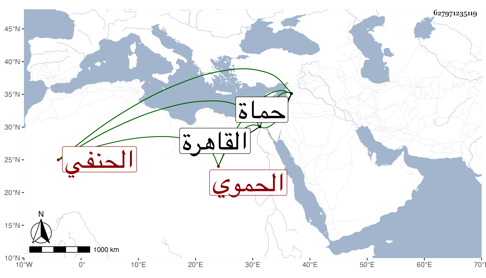

0902Sakhawi.DawLamic.ITO20230111-ara1.EIS1600.627971235119
Biography ID: 627971235119
539
علي بن إبراهيم بن علي بن محمد العلاء أبو الحسن الحموي الحنفي بن القضامي ولد سنة أربعين وسبعمائة أو بعدها وأخذ النحو عن السري أبي الوليد المالكي والفقه عن الصدر بن منصور الدمشقي وبرع فيهما وفي الأصلين والأدب والإنشاء وله نظم ليس بذلك ولكنه كان غاية في المعرفة بالشعر وإدراك المعاني الدقيقة فيه وكتب الحكم للناصري بن البارزي الشافعي بحماة وكذا ناب عنه ثم استقل بقضاء الحنفية بها وانفرد برياستها فيه وكان إماما رئيسا محتشما صدرا كبيرا دينا عادلا في حكمه عالما فاضلا ، ومن نظمه :
| عين على المحبوب قد قال لي | راح إلى غيرك يبغي اللجين |
| فجئته بالتبر مستدركا | فقلت ما جئتك إلا بعين |
ومنه وقد جردت حمام تقي الدين وسيق لها الماء من الناعورة الحاجبية :
| يا أيها الحمام بشراك قد | عدت إلى عصر الصبا الذاهب |
| كنت قليل الما بغيضا لنا | فصرت كالعين من الحاجب |
ذكره شيخنا في معجمه وقال أنه قدم القاهرة فاجتمعت به وسمعت من فوائده وسمع من نظمي وأنشدني شمس الدين بن المصري في سنة إحدى عشرة قال : أنشدني القاضي علاء الدين بن القضامي قال : أنشدني ابن حجر لنفسه مضمنا فذكر بيتين كان سمعهما مني سنة ثلاث وثمانمائة وحدث عني بهما بحماة مات بها في ربيع الآخر سنة تسع وقال فيها من إنبائه أنه أخذ الفقه عن أثير الدين بن وهبان وتمهر وبهرت فضائله وولي قضاء بلده وقدم القاهرة سنة الكائنة العظمى فاشتهرت فضائله وعرفت فنونه وحدث وأفاد وسمعت منه وسمع من نظمي وأكثر الثناء عليه ومن نظمه :
| خذ بيدي يا كريم خذ بيدي | قد عيل صبري وقد وهى جلدي |
| إن لم تجد لي فمن يجود علي | ضعفي بلا أمره ولا بلدي |
بل ذكره أيضا في سنة سبع منه وقال أنه كان من أهل العلم والفضل والذكاء مع الدين والخير والرياسة قلت : وتسع بتقديم التاء هو الصواب وكذا ذكره المقريزي في عقوده وابن خطيب الناصرية ، وقد حج في بعض السنين في محفة فقال الأديب شمس الدين محمد بن بركة المزين :
| محفة المجلس العلائي | تبث علياه في المشاهد |
| تقول هذا أعطى وأفنى | وحج في الناس وهو قاعد |
